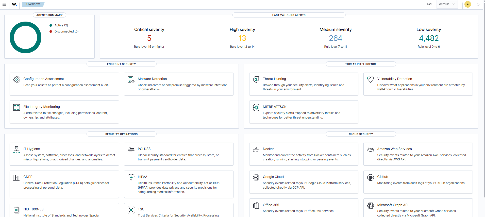
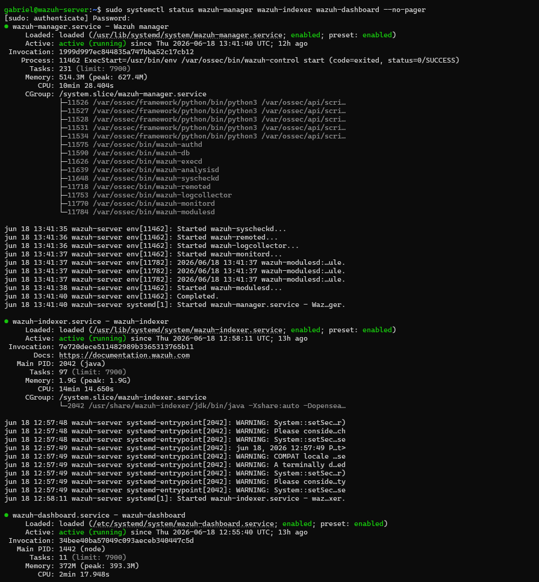
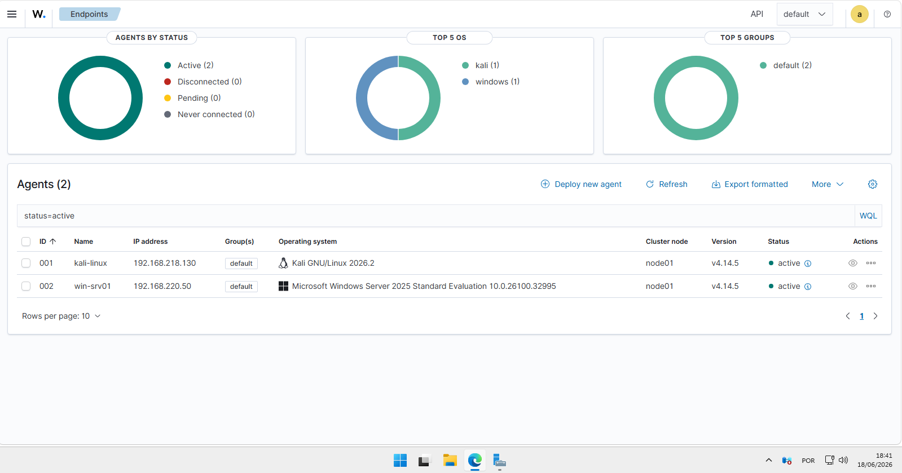
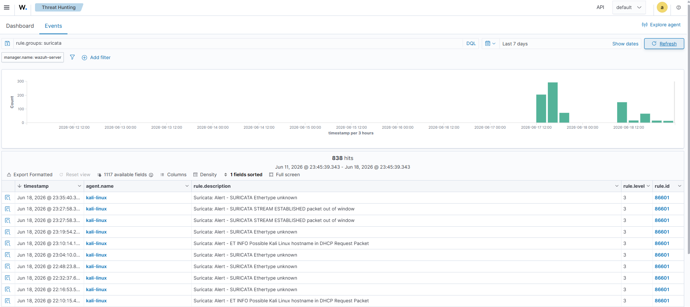

Host físico
Dell OptiPlex com Windows 11, Intel Core i7-10700T, 32GB RAM e SSD NVMe 1TB. Base de virtualização para todas as VMs do lab.
Dell OptiPlex
i7-10700T
32GB RAM
VMware Workstation
SIEM/XDR • Blue Team • Threat Hunting • Detection Engineering
Wazuh 4.14.5 instalado no Ubuntu Server, com múltiplos agentes ativos (Kali Linux e Windows Server 2025), integrado ao Suricata IDS e ao pfSense. Pipeline completo de detecção com regras customizadas, tuning de falsos positivos, SCA, FIM e Threat Hunting real validado contra ataques do Metasploit e OWASP Juice Shop.
Topologia
Índice
Sobre o laboratório
O Wazuh é o eixo central do laboratório — é ele que coleta, processa, correlaciona e apresenta os eventos de segurança de todos os outros componentes. Sem o Wazuh, os logs do Suricata ficam em arquivos JSON isolados, os eventos do Sysmon ficam no Event Viewer do Windows e as detecções do pfSense ficam no syslog. Com o Wazuh, tudo converge num único painel com busca, correlação e alertas.
Este laboratório foi construído progressivamente: primeiro o Manager e o agente do Kali, depois a integração com o Suricata, depois o pfSense, e finalmente o agente do Windows Server com Sysmon. Cada etapa adicionou uma nova camada de visibilidade ao ambiente — e cada integração trouxe novos problemas reais pra diagnosticar e resolver.
Especificações
Dell OptiPlex com Windows 11, Intel Core i7-10700T, 32GB RAM e SSD NVMe 1TB. Base de virtualização para todas as VMs do lab.
Ubuntu Server com Wazuh 4.14.5 completo — Manager, Dashboard, Indexer e Filebeat. IP 10.10.10.10 na LAN do pfSense. Ponto central de coleta e correlação de todos os eventos do lab.
Kali Linux com agente Wazuh e Suricata 8.0.5. Dupla função: endpoint monitorado (agente) e sensor de rede (Suricata → eve.json → Wazuh).
Windows Server 2025 com Sysmon (SwiftOnSecurity config), auditoria avançada (Event ID 4688/4104) e agente Wazuh. Telemetria de host Windows completa.
Processo de implementação
A implementação foi progressiva — cada etapa adicionou uma nova camada de visibilidade. A metodologia foi a mesma em todas: backup, leitura da documentação, planejamento, execução, teste e validação antes de avançar.
Instalação do stack completo no Ubuntu Server via script oficial: Manager, Indexer, Dashboard e Filebeat. Validação com systemctl status wazuh-manager e acesso ao dashboard via HTTPS.
Deploy do agente no Kali via comando gerado pelo dashboard (Agents Management → Deploy new agent). Registro automático no Manager, status Active confirmado.
Adição do eve.json no ossec.conf do agente Kali. Wazuh passou a ingerir alertas do Suricata com decoders nativos — 710+ eventos nas primeiras 24h.
Deploy do agente no Windows Server 2025 via MSI. Configuração dos canais Sysmon/Operational e PowerShell/Operational no ossec.conf. Telemetria completa de host Windows no dashboard.
Falso positivo identificado: regra 92205 (nível 9) disparando pra execução legítima do módulo SCA do próprio Wazuh. Regra de exceção criada no local_rules.xml com nível rebaixado para 3.
Agentes ativos
Ter agentes em Linux e Windows é fundamental pra cobertura real de SOC — a maioria das detecções do mercado são para Windows (Event Log, Sysmon, PowerShell), mas ambientes Linux (servidores, Kali como atacante) também precisam de monitoramento. Este lab cobre os dois.
Agente no Kali Linux monitorando autenticação, processos, integridade de arquivos e ingerindo eventos do Suricata (50k+ regras). Versão 4.14.5, status Active.
Agente no Windows Server 2025 com telemetria completa — Sysmon (Event IDs 1/3/11/13), Security log (4688 com linha de comando) e PowerShell/Operational (4104 script block logging). Versão 4.14.5, status Active.
ossec.conf — canais monitorados no Windows Server
<!-- Canais padrão --> <localfile><location>Application</location><log_format>eventchannel</log_format></localfile> <localfile><location>Security</location><log_format>eventchannel</log_format></localfile> <localfile><location>System</location><log_format>eventchannel</log_format></localfile> <!-- Canais adicionados manualmente --> <localfile> <location>Microsoft-Windows-Sysmon/Operational</location> <log_format>eventchannel</log_format> </localfile> <localfile> <location>Microsoft-Windows-PowerShell/Operational</location> <log_format>eventchannel</log_format> </localfile>
Integrações
O eve.json do Suricata é lido continuamente pelo Wazuh Logcollector no agente Kali. Decoders nativos processam campos como alert.signature, src_ip e dest_port — correlacionando tráfego de rede com eventos de host.
O agente Windows coleta via eventchannel os canais Application, Security, System, Sysmon/Operational e PowerShell/Operational. Regras nativas do Wazuh como 67027 (Event ID 4688) e regras Sysmon decodam e classificam cada evento automaticamente.
O pfSense está na mesma rede (VMnet1) e atua como gateway do lab — todo tráfego entre as VMs e a internet passa por ele. Integração via syslog documenta conexões e bloqueios do firewall no Wazuh.
Todos os eventos convergem no módulo Threat Hunting → Events, pesquisável em DQL. Filtros como rule.groups: suricata, agent.name: win-srv01 e data.alert.signature_id: 3400020 permitem isolar eventos específicos de qualquer fonte.
Tuning de regras
Durante a operação normal do lab, a regra nativa 92205 (nível 9 — "Powershell process created an executable file in Windows root folder") disparou de forma persistente para uma execução completamente legítima. Análise do alerta revelou a causa raiz.
Regra 92205, nível 9. Processo: SecEdit.exe /export /cfg C:\Windows\TEMP\secexport.cfg. Parecia suspeito pelo nível alto — mas a análise mostrou que era legítimo.
Campos inspecionados: win.eventdata.currentDirectory = C:\Program Files (x86)\ossec-agent\, integrityLevel = System, binário assinado por Microsoft. Conclusão: módulo SCA do próprio Wazuh fazendo auditoria de política de segurança local.
Regra customizada 100205 no local_rules.xml do Manager: quando a 92205 dispara com SecEdit.exe + ossec-agent como pai, rebaixa o nível para 3 (informativo).
local_rules.xml — /var/ossec/etc/rules/
<group name="local,sca,">
<rule id="100205" level="3">
<if_sid>92205</if_sid>
<field name="win.eventdata.image">SecEdit.exe</field>
<field name="win.eventdata.parentImage">ossec-agent</field>
<description>Wazuh SCA module exporting security policy via SecEdit - expected behavior</description>
<options>no_full_log</options>
</rule>
</group>
⚠️ IDs de regra customizada usam a faixa 100000–119999 — nunca reutilizar IDs do ruleset padrão (evita conflito em updates do Wazuh).
Threat Hunting
O Threat Hunting no Wazuh não é sobre alertas sintéticos — é sobre ataques reais, executados do Kali contra alvos reais do lab, com detecção validada no dashboard. Dois exercícios de Red Team vs Blue Team foram conduzidos e correlacionados no SIEM.
Exercício 1 — Metasploitable2
nmap -sV -p- contra o alvo. Suricata detectou e encaminhou ao Wazuh: POSSBL PORT SCAN (NMAP -sA), rule 86601.
Exploração via exploit/multi/samba/usermap_script. Shell reversa na porta 4444 detectada pelo Suricata: POSSBL SCAN SHELL M-SPLOIT TCP, severity 1, "Network Trojan detected".
Busca data.alert.signature_id: 3400020 em Threat Hunting retornou 2 hits — reconhecimento e exploração — com timestamps e IPs documentados.
Exercício 2 — OWASP Juice Shop
Payload ' OR 1=1-- no POST /rest/user/login. Regra customizada SID 9000001 (criada no Suricata) detectou e encaminhou ao Wazuh: LOCAL SQLi Attempt - OR 1=1 in HTTP Body.
DOM XSS executado com sucesso no navegador, mas não apareceu no Wazuh — parâmetro processado inteiramente no frontend, nunca trafegou como requisição HTTP. Gap estrutural confirmado.
Busca data.dest_port: 3000 AND data.alert.category: "Web Application Attack" retornou 1 hit — SQLi detectado, XSS ausente conforme esperado.
Buscas DQL usadas no Threat Hunting
# Todos os eventos do Suricata rule.groups: suricata # Shell reversa do Metasploit data.alert.signature_id: 3400020 # Eventos do Windows Server agent.name: win-srv01 # SQLi no Juice Shop data.dest_port: 3000 AND data.alert.category: "Web Application Attack" # Criação de processo (Sysmon) agent.name: win-srv01 AND location: Microsoft-Windows-Sysmon/Operational
Competências desenvolvidas
Instalação, configuração e operação do Wazuh 4.14.5 — Manager, Indexer, Dashboard e Filebeat. Gerenciamento de agentes, verificação de saúde do cluster e manutenção do pipeline de eventos.
Análise de falso positivo com identificação de processo pai, hash, integridade e diretório de execução. Criação de regra de exceção no local_rules.xml com nível calibrado — sem suprimir o alerta, só ajustando a severidade.
Busca ativa em DQL por ataques reais — port scan, shell reversa do Metasploit e SQL Injection. Correlação de eventos de rede (Suricata) com eventos de host (Sysmon) no mesmo dashboard.
Integração de Sysmon (EIDs 1/3/11/13), Event ID 4688 (linha de comando completa) e Event ID 4104 (PowerShell Script Block) via eventchannel. Cobertura de host Windows no nível que o mercado real exige.
Pipeline Suricata → eve.json → Wazuh Logcollector → Manager. Decoders nativos processando alertas de rede, correlacionados com eventos de host — visibilidade de ponta a ponta.
Diagnóstico de IP dinâmico no agente Windows (DHCP não desabilitado), log duplicado no ossec.conf e sensor Suricata na interface errada. Todos corrigidos com causa raiz identificada e revalidação ativa.
Resultados
Evidências




Conclusão
O Wazuh foi o primeiro lab do ambiente e continua sendo o centro dele — cada nova ferramenta adicionada (Suricata, pfSense, Windows Server) se integra ao Wazuh como ponto de convergência. O resultado é um pipeline de detecção que cobre host Linux, host Windows, tráfego de rede e perímetro de firewall em um único painel, com alertas validados contra ataques reais executados no próprio lab.
Instalação via script oficial (all-in-one) no Ubuntu Server:
curl -sO https://packages.wazuh.com/4.14/wazuh-install.sh sudo bash wazuh-install.sh -a
O script instala Manager, Indexer, Dashboard e Filebeat. Ao final, exibe a senha gerada do usuário admin. Acesso ao dashboard via https://<IP>.
Validação dos serviços:
sudo systemctl status wazuh-manager --no-pager sudo systemctl status wazuh-indexer --no-pager sudo systemctl status wazuh-dashboard --no-pager
Deploy gerado pelo dashboard (Agents Management → Deploy new agent → Linux/DEB amd64):
wget https://packages.wazuh.com/4.x/apt/pool/main/w/wazuh-agent/wazuh-agent_4.14.5-1_amd64.deb sudo WAZUH_MANAGER='10.10.10.10' WAZUH_AGENT_NAME='kali-linux' \ dpkg -i ./wazuh-agent_4.14.5-1_amd64.deb sudo systemctl start wazuh-agent sudo systemctl enable wazuh-agent
Confirmação no dashboard: agente kali-linux com status Active, ID 001.
Bloco adicionado ao /var/ossec/etc/ossec.conf do agente Kali:
<localfile> <location>/var/log/suricata/eve.json</location> <log_format>json</log_format> </localfile>
Confirmação nos logs do agente após restart:
sudo tail -50 /var/ossec/logs/ossec.log | grep -i suricata # wazuh-logcollector: INFO: (1950): Analyzing file: '/var/log/suricata/eve.json'
⚠️ Cuidado com entrada duplicada no ossec.conf — o Wazuh avisa com "Log file is duplicated" e ignora a segunda entrada, mas o warning aparece nos logs.
Deploy via MSI gerado pelo dashboard (Windows):
Invoke-WebRequest -Uri https://packages.wazuh.com/4.x/windows/wazuh-agent-4.14.5-1.msi ` -OutFile $env:tmp\wazuh-agent.msi msiexec.exe /i $env:tmp\wazuh-agent.msi /q ` WAZUH_MANAGER='10.10.10.10' ` WAZUH_AGENT_NAME='win-srv01' NET START WazuhSvc
Canais adicionados ao ossec.conf para telemetria completa:
Microsoft-Windows-Sysmon/Operational — EIDs 1/3/11/13Microsoft-Windows-PowerShell/Operational — EID 4104 (Script Block)O evento que disparou a regra 92205 tinha estes campos no data.win.eventdata:
Regra criada no Manager em /var/ossec/etc/rules/local_rules.xml:
<rule id="100205" level="3"> <if_sid>92205</if_sid> <field name="win.eventdata.image">SecEdit.exe</field> <field name="win.eventdata.parentImage">ossec-agent</field> <description>Wazuh SCA - SecEdit export - expected behavior</description> </rule>
Aplicado com sudo systemctl restart wazuh-manager. Validado com sudo /var/ossec/bin/wazuh-logtest.